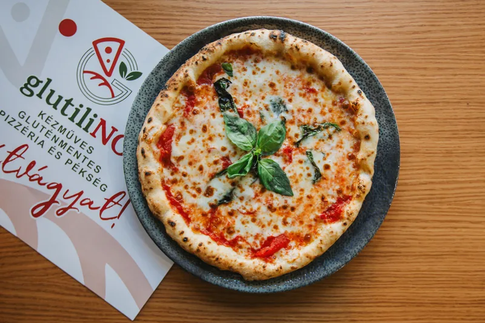
Margherita
Az olasz klasszikus, a GlutiliNO konyhájából.
Pizzák, frissen sült kenyerek, péksütemények és desszertek, mind gluténmentesen. Az összetevőkről és az allergénekről munkatársaink szívesen tájékoztatnak.
Levegős perem, vékony közép. Saját receptúra, legalább 48 órán át érlelt tésztával.

Az olasz klasszikus, a GlutiliNO konyhájából.

Pizza sonkával, paprikával és lilahagymával.
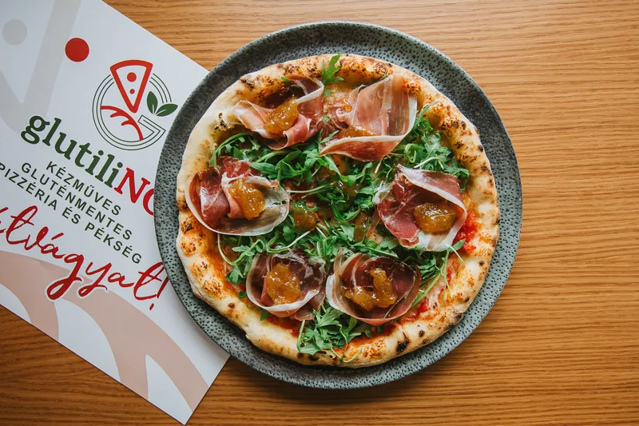
Gluténmentes pizza gazdag feltéttel.
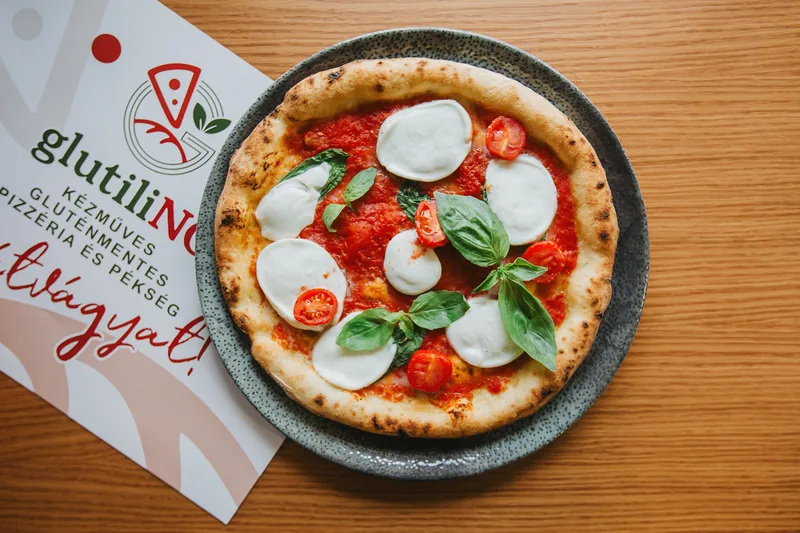
Paradicsom, bazsalikom és lágy sajt gluténmentes tésztán.
Egy ráérős reggelihez vagy egy finom délutáni szünethez.

A pult egyik édes kedvence, gluténmentesen.
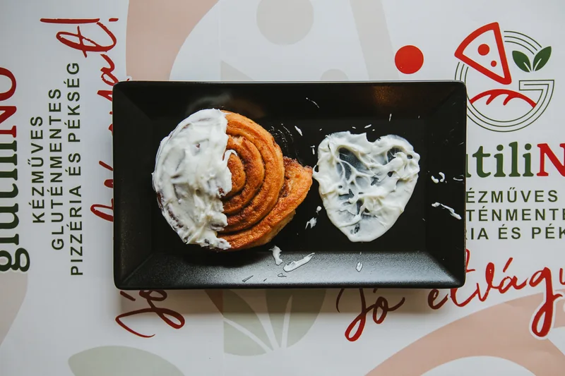
Illatos, puha fahéjas péksütemény a napi kínálatból.
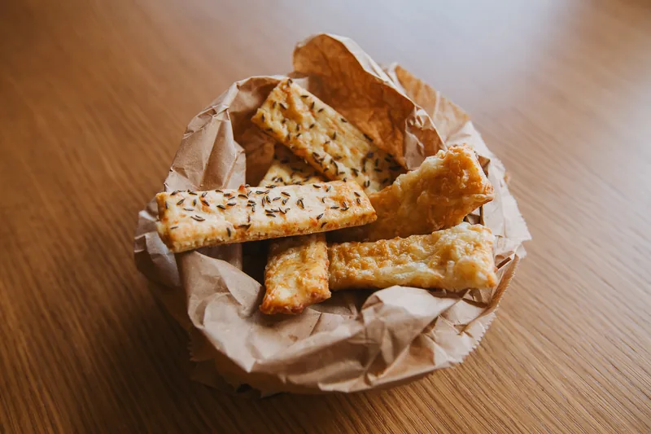
Ropogós, sós harapnivaló gluténmentesen.
Frissen sült kenyér, amit haza is vihetsz magaddal.

Kézműves kenyér magvakkal.
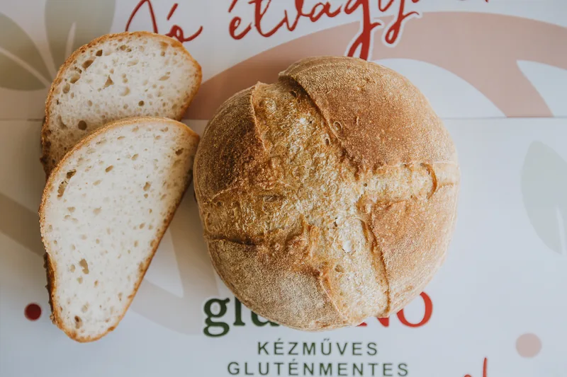
Levegős belsejű, kézműves gluténmentes kenyér.
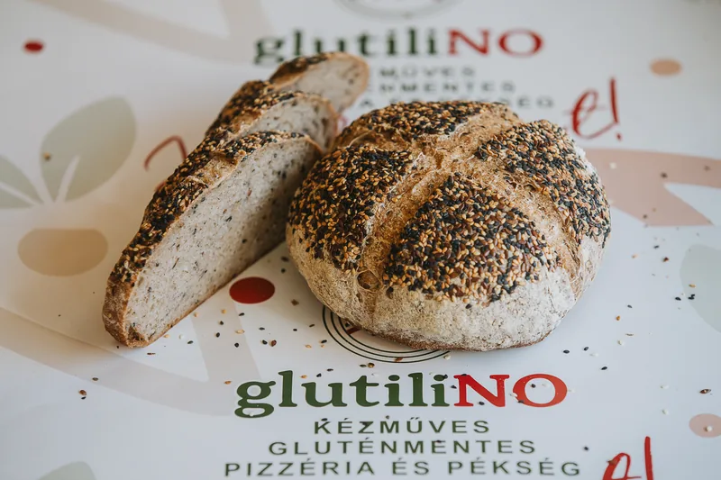
Gazdag magvas kéreg és puha belső.
Mert egy jó étkezés végén mindig jut hely valami édesnek.

Apró, színes finomságok a desszertpultból.
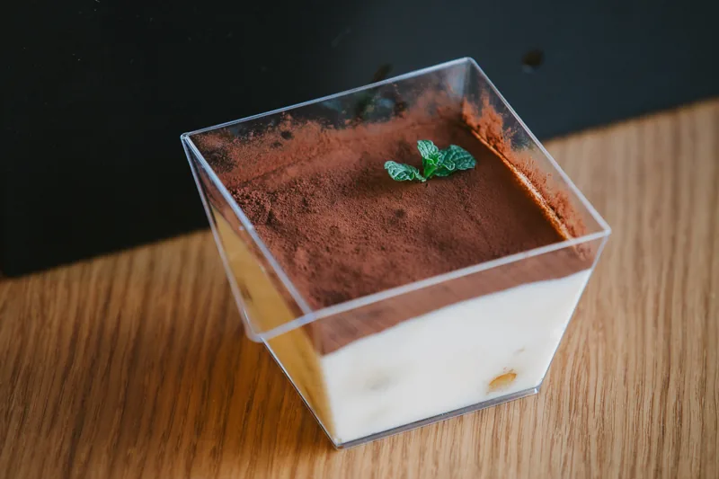
Az olasz desszertklasszikus, saját készítésű piskótával.
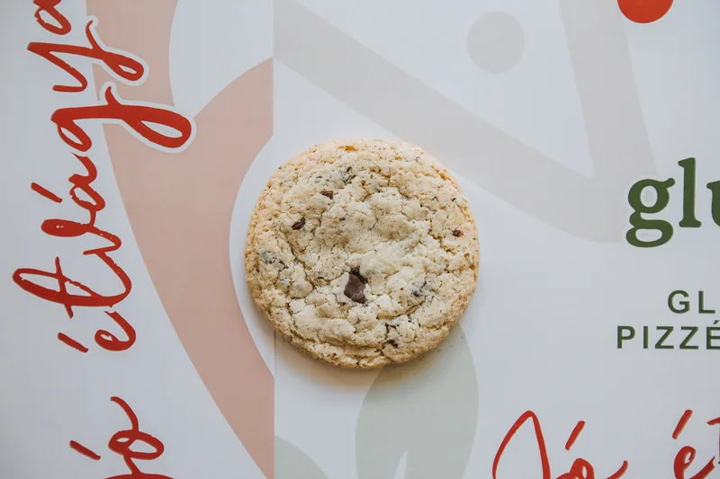
Kívül roppanós, belül puha sütemény.
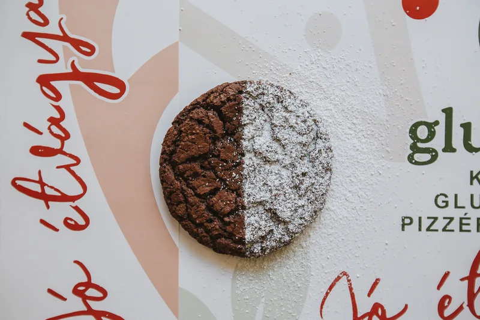
Gazdag csokoládés desszert.
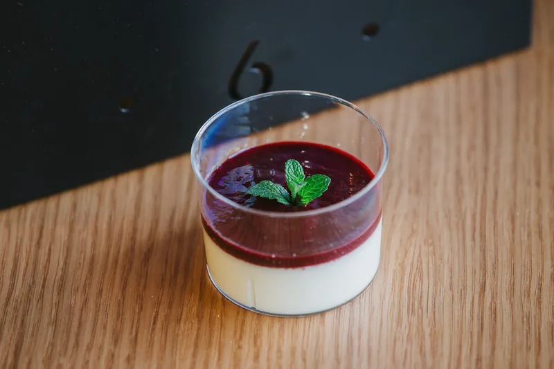
Selymes desszert friss gyümölcsös réteggel.
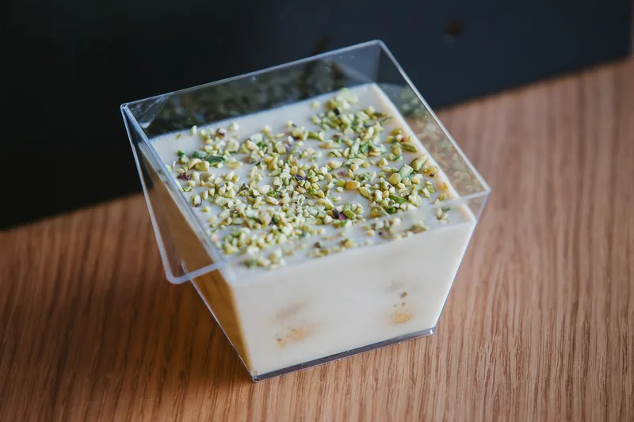
Krémes desszert roppanós pisztáciával.
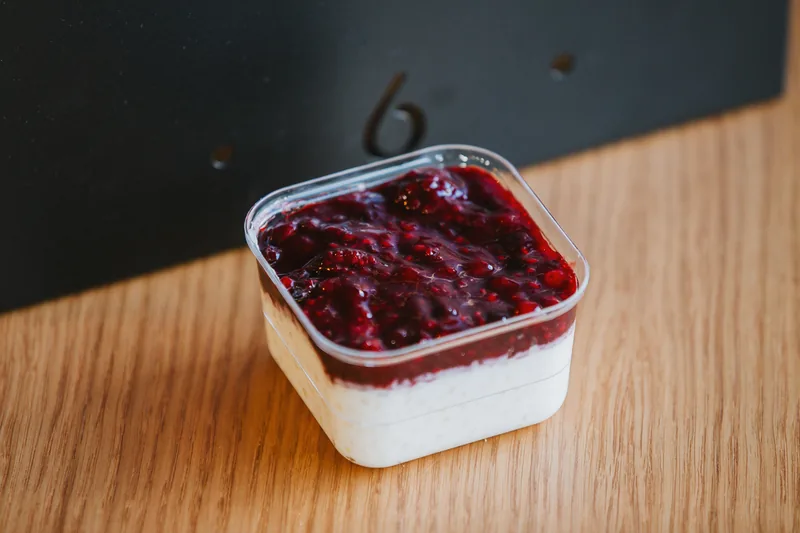
Krémes alap intenzív erdei gyümölcsös feltéttel.